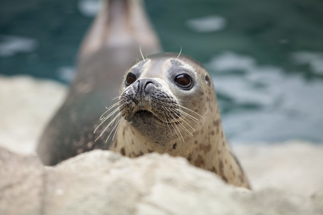

Facts

Some facts about seals!
1. Seals are part of the pinniped order of marine mammals, which also includes sea lions, walruses and fur seals. There are 33 species of pinnipeds in the world and all are believed to have evolved from once terrestrial otter-like creatures.
2. Seals prefer cold sea waters and are primarily found in the Arctic and Antarctic regions.
3. In the wild, seals can live for up to 30 years with females boasting a higher life expectancy than males.